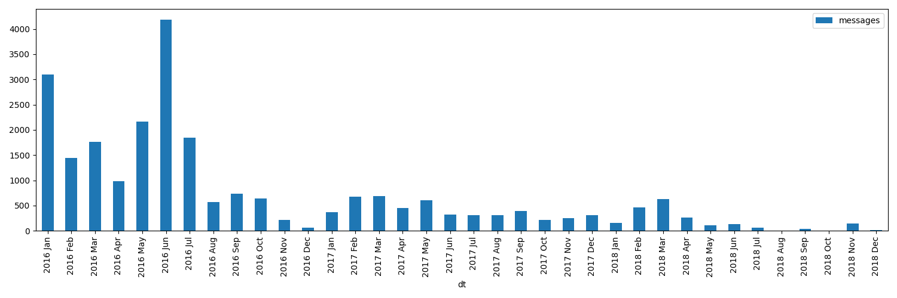

Human Programming Interface
TLDR: I'm using HPI (Human Programming Interface) package as a means of unifying, accessing and interacting with all of my personal data.
It's a Python library (named my), a collection of modules for:
- social networks: posts, comments, favorites
- reading: e-books and pdfs
- annotations: highlights and comments
- todos and notes
- health data: sleep, exercise, weight, heart rate, and other body metrics
- location
- photos & videos
- browser history
- instant messaging
The package hides the gory details of locating data, parsing, error handling and caching. You simply 'import' your data and get to work with familiar Python types and data structures.
Here's a short example to give you an idea: "which subreddits I find the most interesting?"
import my.reddit from collections import Counter return Counter(s.subreddit for s in my.reddit.saved()).most_common(4)
Once the data is available as Python objects, I can easily plug it into existing tools, libraries and frameworks. It makes building new tools considerably easier and allows creating new ways of interacting with the data.
I tried different things over the years and I think I'm getting to the point where other people can also benefit from my code by 'just' plugging in their data, and that's why I'm sharing this.
Imagine if all your life was reflected digitally and available at your fingertips. This library is my attempt to achieve this vision.
If you're in a hurry, feel free to jump straight to the demos.
For installation/configuration/development guide, see SETUP.org.
Table of Contents
¶1 Why?
The main reason that led me to develop this is the dissatisfaction of the current situation:
Our personal data is siloed and trapped across cloud services and various devices
Even when it's possible to access it via the API, it's hardly useful, unless you're an experienced programmer, willing to invest your time and infrastructure.
We have insane amounts of data scattered across the cloud, yet we're left at the mercy of those who collect it to provide something useful based on it
Integrations of data across silo boundaries are almost non-existent. There is so much potential and it's all wasted.
I'm not willing to wait till some vaporwave project reinvents the whole computing model from scratch
As a programmer, I am in capacity to do something right now, even though it's not necessarily perfect and consistent.
I've written a lot about it here, so allow me to simply quote:
- search and information access
- Why can't I search over all of my personal chat history with a friend, whether it's ICQ logs from 2005 or Whatsapp logs from 2019?
- Why can't I have incremental search over my tweets? Or browser bookmarks? Or over everything I've ever typed/read on the Internet?
- Why can't I search across my watched youtube videos, even though most of them have subtitles hence allowing for full text search?
- Why can't I see the places my friends recommended me on Google maps (or any other maps app)?
- productivity
- Why can't my Google Home add shopping list items to Google Keep? Let alone other todo-list apps.
- Why can't I create a task in my todo list or calendar from a conversation on Facebook Messenger/Whatsapp/VK.com/Telegram?
- journaling and history
- Why do I have to lose all my browser history if I decide to switch browsers?
- Why can't I see all the places I traveled to on a single map and photos alongside?
- Why can't I see what my heart rate (i.e. excitement) and speed were side by side with the video I recorded on GoPro while skiing?
- Why can't I easily transfer all my books and metadata if I decide to switch from Kindle to PocketBook or vice versa?
- consuming digital content
- Why can't I see stuff I highlighted on Instapaper as an overlay on top of web page?
- Why can't I have single 'read it later' list, unifying all things saved on Reddit/Hackernews/Pocket?
- Why can't I use my todo app instead of 'Watch later' playlist on youtube?
- Why can't I 'follow' some user on Hackernews?
- Why can't I see if I've run across a Youtube video because my friend sent me a link months ago?
- Why can't I have uniform music listening stats based on my Last.fm/iTunes/Bandcamp/Spotify/Youtube?
- Why am I forced to use Spotify's music recommendation algorithm and don't have an option to try something else?
- Why can't I easily see what were the books/music/art recommended by my friends or some specific Twitter/Reddit/Hackernews users?
- Why my otherwise perfect hackernews app for Android doesn't share saved posts/comments with the website?
- health and body maintenance
- Why can't I tell if I was more sedentary than usual during the past week and whether I need to compensate by doing a bit more exercise?
- Why can't I see what's the impact of aerobic exercise on my resting HR?
- Why can't I have a dashboard for all of my health: food, exercise and sleep to see baselines and trends?
- Why can't I see the impact of temperature or CO2 concentration in room on my sleep?
- Why can't I see how holidays (as in, not going to work) impact my stress levels?
- Why can't I take my Headspace app data and see how/if meditation impacts my sleep?
- Why can't I run a short snippet of code and check some random health advice on the Internet against my health data.
- personal finance
- Why am I forced to manually copy transactions from different banking apps into a spreadsheet?
- Why can't I easily match my Amazon/Ebay orders with my bank transactions?
- why I can't do anything when I'm offline or have a wonky connection?
- tools for thinking and learning
- Why when something like 'mind palace' is literally possible with VR technology, we don't see any in use?
- Why can't I easily convert select Instapaper highlights or new foreign words I encountered on my Kindle into Anki flashcards?
- mediocre interfaces
- Why do I have to suffer from poor management and design decisions in UI changes, even if the interface is not the main reason I'm using the product?
- Why can't I leave priorities and notes on my saved Reddit/Hackernews items?
- Why can't I leave private notes on Deliveroo restaurants/dishes, so I'd remember what to order/not to order next time?
- Why do people have to suffer from Google Inbox shutdown?
- communication and collaboration
- Why can't I easily share my web or book highlights with a friend? Or just make highlights in select books public?
- Why can't I easily find out other person's expertise without interrogating them, just by looking what they read instead?
- backups
- Why do I have to think about it and actively invest time and effort?
- I'm tired of having to use multiple different messengers and social networks
I'm tired of shitty bloated interfaces
Why do we have to be at mercy of their developers, designers and product managers? If we had our data at hand, we could fine-tune interfaces for our needs.
I'm tired of mediocre search experience
Text search is something computers do exceptionally well. Yet, often it's not available offline, it's not incremental, everyone reinvents their own query language, and so on.
I'm frustrated by poor information exploring and processing experience
While for many people, services like Reddit or Twitter are simply time killers (and I don't judge), some want to use them efficiently, as a source of information/research. Modern bookmarking experience makes it far from perfect.
You can dismiss this as a list of first-world problems, and you would be right, they are. But the major reason I want to solve these problems is to be better at learning and working with knowledge, so I could be better at solving the real problems.
¶2 How does a Python package help?
When I started solving some of these problems for myself, I've noticed a common pattern: the hardest bit is actually getting your data in the first place. It's inherently error-prone and frustrating.
But once you have the data in a convenient representation, working with it is pleasant – you get to explore and build instead of fighting with yet another stupid REST API.
This python package knows how to find data, deserialize it and normalize it to the convenient representation. You have the full power of the programming language to transform the data and do whatever comes to your mind.
¶Why don't you just put everything in a massive database?
Glad you've asked! I wrote a whole post about it.
In short: while databases are efficient and easy to read from, often they aren't flexible enough to fit your data. You're probably going to end up writing code anyway.
While working with your data, you'll inevitably notice common patterns and code repetition, which you'll probably want to extract somewhere. That's where a Python package comes in.
¶3 What's inside?
Here's an (incomplete) list of the modules in the public package:
| my.bluemaestro | Bluemaestro temperature/humidity/pressure monitor |
| my.body.blood | Blood tracking |
| my.body.weight | Weight data (manually logged) |
| my.books.kobo | Kobo e-ink reader: annotations and reading stats |
| my.calendar.holidays | Provides data on days off work (based on public holidays + manual inputs) |
| my.coding.commits | Git commits data: crawls filesystem |
| my.coding.github | Github events and their metadata: comments/issues/pull requests |
| my.emfit | Emfit QS sleep tracker |
| my.fbmessenger | Module for Facebook Messenger messages |
| my.feedbin | Module for Feedbin RSS reader |
| my.feedly | Module for Feedly RSS reader |
| my.hypothesis | Hypothes.is highlights and annotations |
| my.instapaper | Instapaper bookmarks, highlights and annotations |
| my.location.takeout | Module for Google Takeout data |
| my.materialistic | Module for Materialistic app for Hackernews |
| my.notes.orgmode | Programmatic access and queries to org-mode files on the filesystem |
| my.photos | Module for accessing photos and videos, with their GPS and timestamps |
| my.pinboard | Module for pinboard.in bookmarks |
| my.reading.polar | Module for Polar articles and highlights |
| my.reddit | Module for Reddit data: saved items/comments/upvotes etc |
| my.rtm | Remember The Milk tasks and notes |
| my.smscalls | Phone calls and SMS messages |
| my.twitter | Module for Twitter (uses official twitter archive export) |
Some modules are private, and need a bit of cleanup before merging:
| my.workouts | Exercise activity, from Endomondo and manual logs |
| my.sleep.manual | Subjective sleep data, manually logged |
| my.nutrition | Food and drink consumption data, logged manually from different sources |
| my.money | Expenses and shopping data |
| my.webhistory | Browsing history (part of promnesia) |
¶4 How do you use it?
Mainly I use it as a data provider for my scripts, tools, and dashboards.
Also, check out my infrastructure map. It's a draft at the moment, but it might be helpful for understanding what's my vision on HPI.
¶Instant search
Typical search interfaces make me unhappy as they are siloed, slow, awkward to use and don't work offline. So I built my own ways around it! I write about it in detail here.
In essence, I'm mirroring most of my online data like chat logs, comments, etc., as plaintext. I can overview it in any text editor, and incrementally search over all of it in a single keypress.
¶orger
¶promnesia
promnesia is a browser extension I'm working on to escape silos by unifying annotations and browsing history from different data sources.
I've been using it for more than a year now and working on final touches to properly release it for other people.
¶dashboard
As a big fan of #quantified-self, I'm working on personal health, sleep and exercise dashboard, built from various data sources.
I'm working on making it public, you can see some screenshots here.
¶timeline
Timeline is a #lifelogging project I'm working on.
I want to see all my digital history, search in it, filter, easily jump at a specific point in time and see the context when it happened. That way it works as a sort of external memory.
Ideally, it would look similar to Andrew Louis's Memex, or might even reuse his interface if he open sources it. I highly recommend watching his talk for inspiration.
¶5 Ad-hoc and interactive
¶What were my music listening stats for 2018?
Single import away from getting tracks you listened to:
from my.lastfm import get_scrobbles scrobbles = get_scrobbles() scrobbles[200: 205]
[Scrobble(raw={'album': 'Nevermind', 'artist': 'Nirvana', 'date': '1282488504', 'name': 'Drain You'}),
Scrobble(raw={'album': 'Dirt', 'artist': 'Alice in Chains', 'date': '1282489764', 'name': 'Would?'}),
Scrobble(raw={'album': 'Bob Dylan: The Collection', 'artist': 'Bob Dylan', 'date': '1282493517', 'name': 'Like a Rolling Stone'}),
Scrobble(raw={'album': 'Dark Passion Play', 'artist': 'Nightwish', 'date': '1282493819', 'name': 'Amaranth'}),
Scrobble(raw={'album': 'Rolled Gold +', 'artist': 'The Rolling Stones', 'date': '1282494161', 'name': "You Can't Always Get What You Want"})]
Or, as a pandas frame to make it pretty:
import pandas as pd df = pd.DataFrame([{ 'dt': s.dt, 'track': s.track, } for s in scrobbles]) cdf = df.set_index('dt') cdf[200: 205]
track dt 2010-08-22 14:48:24+00:00 Nirvana — Drain You 2010-08-22 15:09:24+00:00 Alice in Chains — Would? 2010-08-22 16:11:57+00:00 Bob Dylan — Like a Rolling Stone 2010-08-22 16:16:59+00:00 Nightwish — Amaranth 2010-08-22 16:22:41+00:00 The Rolling Stones — You Can't Always Get What...
We can use calmap library to plot a github-style music listening activity heatmap:
import matplotlib.pyplot as plt plt.figure(figsize=(10, 2.3)) import calmap cdf = cdf.set_index(cdf.index.tz_localize(None)) # calmap expects tz-unaware dates calmap.yearplot(cdf['track'], how='count', year=2018) plt.tight_layout() plt.title('My music listening activity for 2018') plot_file = 'lastfm_2018.png' plt.savefig(plot_file) plot_file

This isn't necessarily very insightful data, but fun to look at now and then!
¶What are the most interesting Slate Star Codex posts I've read?
My friend asked me if I could recommend them posts I found interesting on Slate Star Codex. With few lines of Python I can quickly recommend them posts I engaged most with, i.e. the ones I annotated most on Hypothesis.
from my.hypothesis import get_pages from collections import Counter cc = Counter({p.url: len(p.highlights) for p in get_pages() if 'slatestarcodex' in p.url}) return cc.most_common(10)
¶Book reading progress
I publish my reading stats on Goodreads so other people can see what I'm reading/have read, but Kobo lacks integration with Goodreads. I'm using kobuddy to access my my Kobo data, and I've got a regular task that reminds me to sync my progress once a month.
The task looks like this:
* TODO [#C] sync reading progress with kobo DEADLINE: <2019-11-24 Sun .+4w -0d> eshell: with_my python3 -c 'import my.books.kobo as kobo; kobo.print_progress()'
With a single Enter keypress on the inlined eshell: command I can print the progress and fill in the completed books on Goodreads, e.g.:
A_Mathematician's_Apology by G. H. Hardy Started : 21 Aug 2018 11:44 Finished: 22 Aug 2018 12:32 Fear and Loathing in Las Vegas: A Savage Journey to the Heart of the American Dream (Vintage) by Thompson, Hunter S. Started : 06 Sep 2018 05:54 Finished: 09 Sep 2018 12:21 Sapiens: A Brief History of Humankind by Yuval Noah Harari Started : 09 Sep 2018 12:22 Finished: 16 Sep 2018 07:25 Inadequate Equilibria: Where and How Civilizations Get Stuck by Eliezer Yudkowsky Started : 31 Jul 2018 22:54 Finished: 16 Sep 2018 07:25 Albion Dreaming by Andy Roberts Started : 20 Aug 2018 21:16 Finished: 16 Sep 2018 07:26
¶Messenger stats
How much do I chat on Facebook Messenger?
from my.fbmessenger import messages import pandas as pd import matplotlib.pyplot as plt df = pd.DataFrame({'dt': m.dt, 'messages': 1} for m in messages()) df.set_index('dt', inplace=True) df = df.resample('M').sum() # by month df = df.loc['2016-01-01':'2019-01-01'] # past subset for determinism fig, ax = plt.subplots(figsize=(15, 5)) df.plot(kind='bar', ax=ax) # todo wonder if that vvv can be less verbose... x_labels = df.index.strftime('%Y %b') ax.set_xticklabels(x_labels) plot_file = 'messenger_2016_to_2019.png' plt.tight_layout() plt.savefig(plot_file) return plot_file

¶6 How does it get input data?
If you're curious about any specific data sources I'm using, I've written it up in detail.
In short:
The data is periodically synchronized from the services (cloud or not) locally, on the filesystem
As a result, you get JSONs/sqlite (or other formats, depending on the service) on your disk.
Once you have it, it's trivial to back it up and synchronize to other computers/phones, if necessary.
To schedule periodic sync, I'm using cron.
my. package only accesses the data on the filesystem
That makes it extremely fast, reliable, and fully offline capable.
As you can see, in such a setup, the data is lagging behind the 'realtime'. I consider it a necessary sacrifice to make everything fast and resilient.
In theory, it's possible to make the system almost realtime by having a service that sucks in data continuously (rather than periodically), but it's harder as well.
¶7 Q & A
¶Why Python?
I don't consider Python unique as a language suitable for such a project. It just happens to be the one I'm most comfortable with. I do have some reasons that I think make it specifically good, but explaining them is out of this post's scope.
In addition, Python offers a very rich ecosystem for data analysis, which we can use to our benefit.
That said, I've never seen anything similar in other programming languages, and I would be really interested in, so please send me links if you know some. I've heard LISPs are great for data? ;)
Overall, I wish FFIs were a bit more mature, so we didn't have to think about specific programming languages at all.
¶Can anyone use it?
Yes!
- you can plug in your own data
- most modules are isolated, so you can only use the ones that you want to
everything is easily extensible
Starting from simply adding new modules to any dynamic hackery you can possibly imagine within Python.
¶How easy is it to use?
The whole setup requires some basic programmer literacy:
- installing/running and potentially modifying Python code
- using symlinks
- potentially running Cron jobs
If you have any ideas on making the setup simpler, please let me know!
¶What about privacy?
The modules contain no data, only code to operate on the data.
Everything is local fist, the input data is on your filesystem. If you're truly paranoid, you can even wrap it in a Docker container.
There is still a question of whether you trust yourself at even keeping all the data on your disk, but it is out of the scope of this post.
If you'd rather keep some code private too, it's also trivial to achieve with a private subpackage.
¶But should I use it?
Sure, maybe you can achieve a perfect system where you can instantly find and recall anything that you've done. Do you really want it? Wouldn't that, like, make you less human?
I'm not a gatekeeper of what it means to be human, but I don't think that the shortcomings of the human brain are what makes us such.
So I can't answer that for you. I certainly want it though. I'm quite open about my goals – I'd happily get merged/augmented with a computer to enhance my thinking and analytical abilities.
While at the moment we don't even remotely understand what would such merging or "mind uploading" entail exactly, I can clearly delegate some tasks, like long term memory, information lookup, and data processing to a computer. They can already handle it really well.
What about these people who have perfect recall and wish they hadn't.
Sure, maybe it sucks. At the moment though, I don't anything close to it and this only annoys me. I want to have a choice at least, and digital tools give me this choice.
¶Would it suit me?
Probably, at least to some extent.
First, our lives are different, so our APIs might be different too. This is more of a demonstration of what's I'm using, although I did spend effort towards making it as modular and extensible as possible, so other people could use it too. It's easy to modify code, add extra methods and modules. You can even keep all your modifications private.
But after all, we've all sharing many similar activities and using the same products, so there is a huge overlap. I'm not sure how far we can stretch it and keep modules generic enough to be used by multiple people. But let's give it a try perhaps? :)
Second, interacting with your data through the code is the central idea of the project. That kind of cuts off people without technical skills, and even many people capable of coding, who dislike the idea of writing code outside of work.
It might be possible to expose some no-code interfaces, but I still feel that wouldn't be enough.
I'm not sure whether it's a solvable problem at this point, but happy to hear any suggestions!
¶What it isn't?
It's not vaporwave
The project is a little crude, but it's real and working. I've been using it for a long time now, and find it fairly sustainable to keep using for the foreseeable future.
It's not going to be another silo
While I don't have anything against commercial use (and I believe any work in this area will benefit all of us), I'm not planning to build a product out of it.
I really hope it can grow into or inspire some mature open source system.
Please take my ideas and code and build something cool from it!
¶8 Related links
Similar projects:
- Memacs by Karl Voit
- Me API - turn yourself into an open API (HN)
- QS ledger from Mark Koester
- tehmantra/my: directly inspired by this package
- bcongdon/bolero
- Solid project: personal data pod, which websites pull data from
Other links:
- NetOpWibby: A Personal API (HN)
- The sad state of personal data and infrastructure: here I am going into motivation and difficulties arising in the implementation
¶9 --
Open to any feedback and thoughts!
Also, don't hesitate to raise an issue, or reach me personally if you want to try using it, and find the instructions confusing. Your questions would help me to make it simpler!
In some near future I will write more about:
- specific technical decisions and patterns
- challenges I had so solve
- more use-cases and demos – it's impossible to fit everything in one post!
, but happy to answer any questions on these topics now!